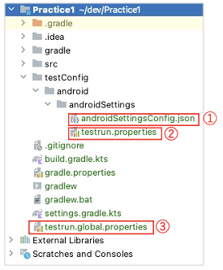
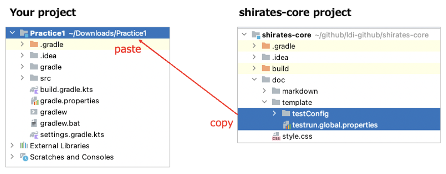

Test configuration template
Test configuration files are required to initialize test session.
testConfig.json(File name is arbitrary. androidSettingsConfig.json in this case)testrun.propertiestestrun.global.properties

You can set up configuration files in your project using template in shirates-core project.
- Select
doc/template/testConfiganddoc/template/testrun.global.properties. - Copy these items and paste to you project root.
